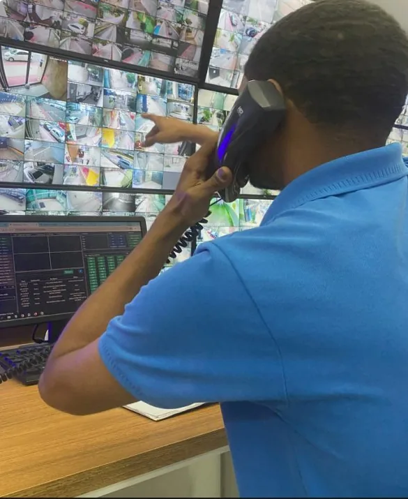
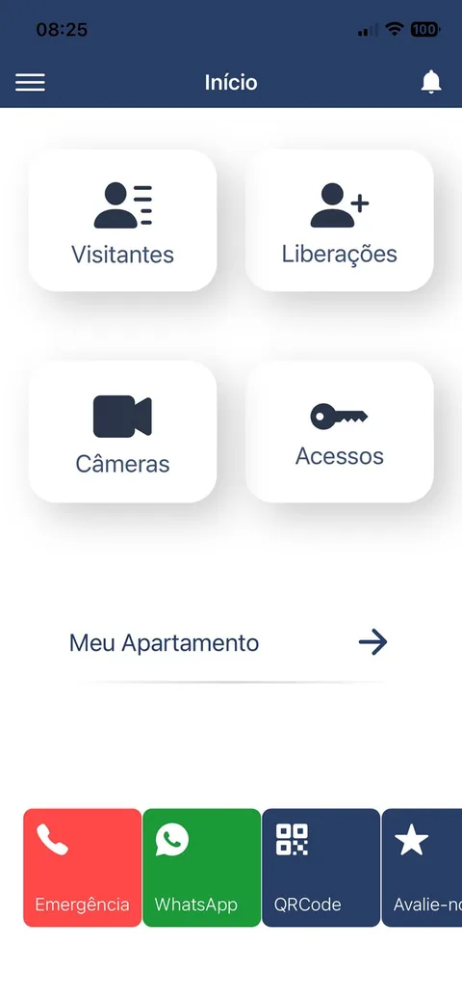
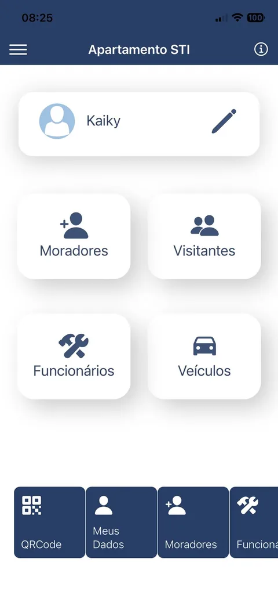
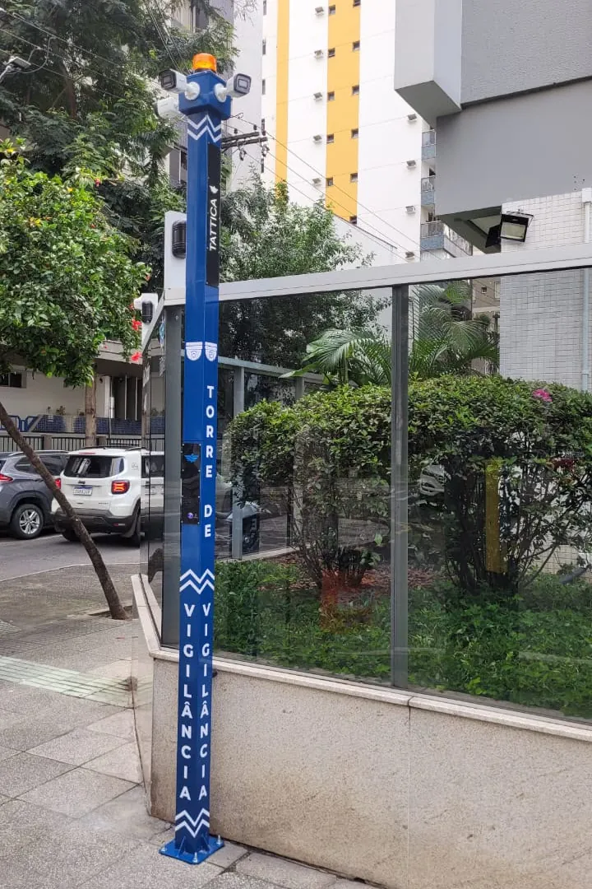
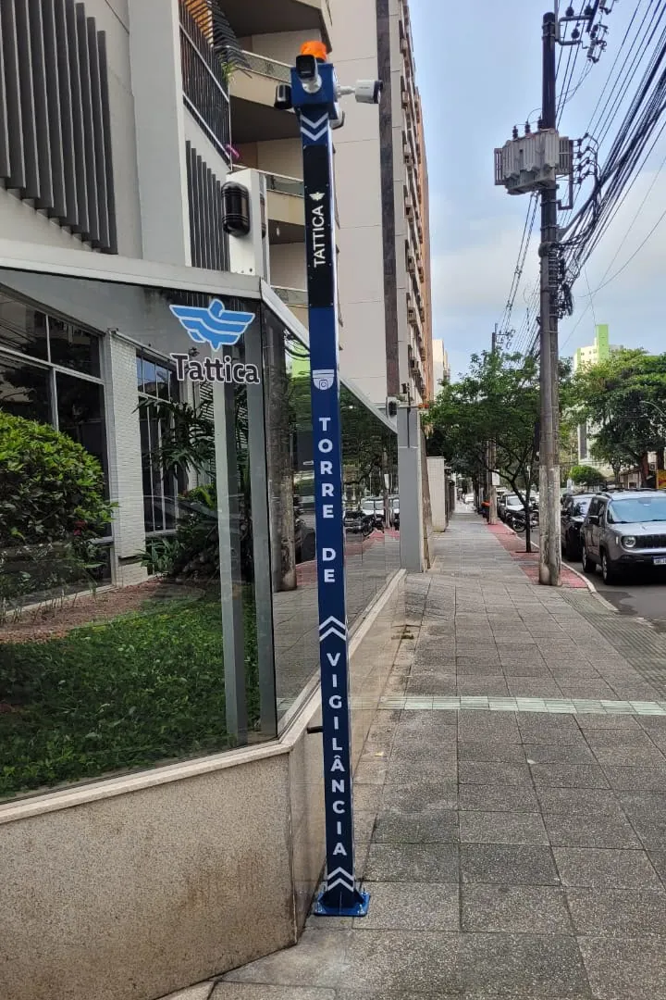
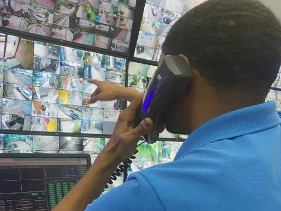

Reduza a taxa do condomínio sem abrir mão da segurança.
Portaria virtual com central de monitoramento 24 horas, controle de acesso rígido e aplicativo próprio, para condomínios do Espírito Santo.
- Fibra óptica
- Conexão ponto a ponto, sem interferências.
- App próprio
- Tattica Center, com gestão completa do condomínio.

Uma central que atende o seu condomínio 24 horas por dia.
A Tattica opera portaria virtual (ou remota) para condomínios do Espírito Santo. Em vez de um porteiro em cada guarita, uma central de monitoramento, operadores treinados e um sistema próprio atendem visitantes, falam com os moradores e liberam acessos à distância, 24 horas por dia, 7 dias por semana.
-
Menos custo fixo
Substitui os serviços do porteiro convencional e reduz custos como a taxa de condomínio.
-
Mais controle
Protocolos rígidos de atendimento e cada operação registrada no sistema.
-
Equipe de prontidão
Suporte técnico disponível para atendimentos e emergências.
Três frentes de proteção, operadas pela mesma equipe.
Portaria, acesso e câmeras trabalham juntos, com a central como ponto de decisão.
Solicitar orçamento-
Portaria virtual
Operadores treinados atendem o interfone, identificam o visitante, confirmam com o morador e liberam a entrada remotamente. Tudo fica registrado no sistema.
-
Controle de acesso
Acesso por tags ou biometria (digital ou facial), QR Code e chaves virtuais para visitantes, com gestão de moradores, visitantes e prestadores.
-
Monitoramento
Câmeras com sensor de movimento acompanhadas pela central. O condomínio também vê as câmeras em tempo real pelo aplicativo.
Como a portaria virtual atende um visitante.
A rotina é direta e acompanhada pela central do começo ao fim.
-
Entrada do visitante
O visitante aciona a central pelo interfone.
-
Identificação
O operador realiza o atendimento e identifica o visitante.
-
Contato com o morador
A central entra em contato com o morador.
-
Autorização
O morador confirma ou não a entrada.
-
Liberação
O acesso é liberado remotamente.
-
Registro
A operação fica registrada no sistema.
Tattica Center, o aplicativo do condomínio.
Desenvolvido e mantido pela própria Tattica, sem depender de equipes terceirizadas. Os ajustes chegam mais rápido e o morador tem controle total na palma da mão.
- Controle e gestão de acessos ao condomínio
- Abertura de portas e portões por QR Code
- Chaves virtuais para visitantes
- Câmeras em tempo real
- Agendamento de festas e áreas comuns
- Alertas de visitas técnicas
- Moradores, visitantes, funcionários e veículos do apartamento
- Emergência e WhatsApp a um toque


Telas reais do aplicativo: login, início e gestão do apartamento.
O que muda na rotina do condomínio
- Entrada sem chave nem cartãoO morador abre portas e portões pelo celular e vê a câmera do local antes de enviar o comando.
- Visitante com hora marcadaA chave virtual define quantos acessos e em que horário. Fora dele, a chave não abre.
- Áreas comuns sem papeladaReservas e agendamentos feitos pelo aplicativo, com as normas do condomínio à vista.
- Câmeras na palma da mãoO morador acompanha as imagens do condomínio em tempo real, quando quiser.
- Cadastro organizado por apartamentoO morador responsável cadastra quem mora com ele, e cada pessoa tem o próprio acesso.
- Biometria facial nas portasEntrada pelas portas de pedestre com o rosto, integrada ao mesmo aplicativo.
Quer ver o Tattica Center funcionando no seu condomínio?
Solicitar orçamentoEquipamentos e tecnologia da operação.
O sistema foi desenvolvido para a portaria remota e é atualizado e testado continuamente por programadores e engenheiros de computação da Tattica.
Já tem câmeras instaladas? Em muitos casos a estrutura existente pode ser avaliada para integração com a operação.
- Câmeras com sensor de movimento
- Acompanham áreas comuns e acessos e detectam movimento.
- Tags e biometria, digital ou facial
- Identificam moradores e visitantes na entrada, conforme a estrutura instalada.
- Conexão por fibra óptica ponto a ponto
- Alta velocidade, sem interferências, mais segurança e manutenção simples.
- Central de monitoramento totalmente equipada
- Onde os operadores atendem, acompanham as câmeras e liberam os acessos.
- Rede e energia de backup
- Sustentam a operação com o menor impacto possível em caso de falta de energia.
- Sistema próprio para portaria remota
- Registra as operações e se integra ao aplicativo Tattica Center.
Torre de Vigilância Tattica.
Uma torre de monitoramento instalada na calçada ou na área externa do condomínio, ligada à central da Tattica. Câmeras, sirene e interfone no mesmo equipamento levam a vigilância para além do portão e mostram a quem passa que o local é monitorado.
- 3 câmeras que, juntas, dão visão de 360° da calçada, dos acessos e do entorno.
- Botão de emergência que dispara a sirene da própria torre na hora.
- Interfone direto com a Tattica: quem está na torre fala na hora com a central.
- Sinalizador luminoso que deixa a vigilância visível de longe e inibe a ação antes de alguém chegar ao portão.
- Acompanhada pela central 24 horas, pela mesma equipe da portaria.
Como ela fica no condomínio.
A torre ocupa pouco espaço na calçada e se destaca na fachada, de dia e de longe.



A central que acompanha o seu condomínio.
É da central que a Tattica atende visitantes, acompanha as câmeras e libera acessos. Os operadores seguem protocolos rígidos de execução e passam por treinamentos constantes, para dar conforto e segurança a quem mora no condomínio.
- Atendimento personalizado por operadores treinados.
- Suporte técnico 24 horas, 7 dias por semana, com prioridade total aos chamados.
- Acesso do condomínio às câmeras e aos registros, conforme a estrutura instalada.
O que o condomínio ganha com a portaria virtual.
Até R$ 108.000,00 por ano
de redução de custos nas taxas de condomínio, segundo a Tattica.
Estimativa divulgada pela empresa. O valor real depende de cada condomínio; peça um orçamento para simular.
-
Economia na taxa
A portaria virtual substitui os serviços do porteiro convencional e reduz custos fixos do condomínio.
-
Controle de acesso mais rígido
Identificação do visitante, confirmação com o morador e registro de cada entrada e saída.
-
Gestão pelo aplicativo
Moradores e administração acompanham acessos, câmeras e liberações pelo Tattica Center.
-
Conexão estável
Fibra óptica ponto a ponto garante alta velocidade e zero interferências na operação.
Por que escolher a Tattica.
Tecnologia desenvolvida em casa e uma operação com rotina, protocolo e equipe de prontidão.
-
Tecnologia própria
Sistema e aplicativo desenvolvidos e mantidos pela Tattica, com ajustes ágeis.
-
Equipe técnica interna
Programadores e engenheiros de computação atualizam e testam o sistema.
-
Operação com protocolo
Operadores seguem protocolos rígidos e treinam constantemente.
-
Atuação no Espírito Santo
Sede em Vitória, na Praia do Suá, com atendimento a condomínios do estado.
Perguntas frequentes.
Não achou o que procura? Fale com a nossa equipe pelo WhatsApp.
Falar no WhatsAppO que é portaria virtual?
É a operação remota de acesso e monitoramento de um condomínio, com atendimento por uma central e apoio de sistemas de controle e comunicação.
A portaria funciona 24 horas?
Sim. A central acompanha os acessos e as ocorrências durante o dia todo.
Como o visitante entra no condomínio?
O visitante aciona a central pelo interfone e o operador realiza o atendimento e identifica a solicitação.
Existe contato com o morador?
Em geral, a central entra em contato com o morador ou responsável para confirmar a entrada.
Como funciona em caso de falta de energia?
A infraestrutura da operação conta com suporte técnico e recursos de contingência para manter a rotina funcionando com o menor impacto possível.
É possível utilizar as câmeras que o condomínio já tem?
Em muitos casos, sim. A infraestrutura existente pode ser avaliada para verificar a compatibilidade com a operação.
O condomínio pode acessar as câmeras?
Sim. O acesso às câmeras e aos registros é parte do acompanhamento da operação e pode ser disponibilizado conforme a estrutura do condomínio.
Peça um orçamento para o seu condomínio.
Conte quantos blocos e acessos o condomínio tem e nossa equipe comercial prepara uma proposta.
-
Telefone e WhatsApp(27) 3026-2196
-
Onde atendemosVitória, Vila Velha, Serra, Guarapari e demais regiões da Grande Vitória.
-
SedeRua Ulisses Sarmento, 24
Praia do Suá, Vitória, ES
Praia do Suá, Vitória, ES Como chegar
Trabalhe com a Tattica
Seja um colaborador Tattica e cresça junto com a gente.